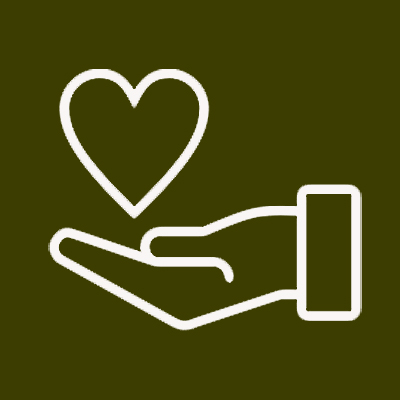
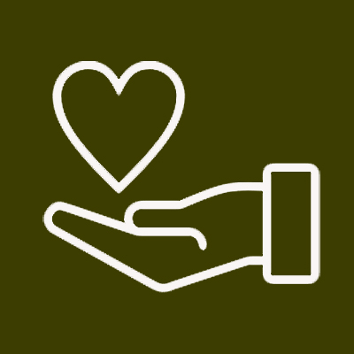

This was my final project for a Computer Vision class that I took. I decided that given that I wasn’t able to have an in person graduation due to COVID, I wanted to be able to put a grad hat on whatever photo I chose. Instead of just using Photoshop, this program finds your face and then uses the slant of the line between your eyes to angle a grad hat on top of your head. You even have the option of inputting RGB values to change the color of the hat, otherwise it’ll just give you one that honors my university. As with a lot of computer vision projects, certain types of photos will result in poor face detection in which case the program will ask you to try again.
Again, a project taken on in a world with an ongoing pandemic, this project helps you dream of traveling once again. Simple app design is usually quite standard and relies heavily on buttons and displaying data or recording it, and I’m quite familiar with that so I wanted to try something new this time, perhaps working with graphics. This app allows you to spin a globe and see where your finger lands as a means of choosing your next vacation destination. It also allows you to see the view out of your plane window aboard the flight to your destination by spinning two globes at once - the actual map one and one that has different stages of the sun painted onto it. This was great fun because I had to work within interesting constraints and because photo manipulation in Swift is so dramatically different from how you would approach the same request in Python.
More pandemic boredom led to making a python program that can check whether you properly solved a sudoku puzzle. The program provides you with a few puzzle options or allows you to input one with blanks yourself. Easy enough to check a sudoku puzzle by eye, but this was fun to make and forced me to consider how to most efficiently manipulate matrices.
I really enjoyed the database class that I took in college, but I recently saw someone sifting through tweets and I thought that was a call use of SQL and Python and a few tutorials later, I was able to put together a program that reads through Elon Musk’s tweets and searches for everyone that he has ever mentioned in the body of his tweets. I wasn’t able to pull directly from Twitter using Python, so this code uses a CSV file I was able to download with all the metadata of his tweets circa 2019.
Another small computer vision based project is this one where I took the input from my laptop’s webcam and manipulated the image in intriguing ways. I was able to recreate those sketch portraits you used to get at arcades when you were little as well as a colored-in version of those. But my favorite effect was finding out that by writing a loop that would rotate the image a few degrees at a time I could make it look like I was disappearing into a spiral.
An interesting mix of design and code, I once designed my own fonts to use in an intro to web development class. The idea is basically drawing out your font and then converting it into a TIFF file that you can then attach to your CSS file and thus use on a website. This skill also came in handy as the basis for a birthday gift for a friend who loves stationery and fonts.